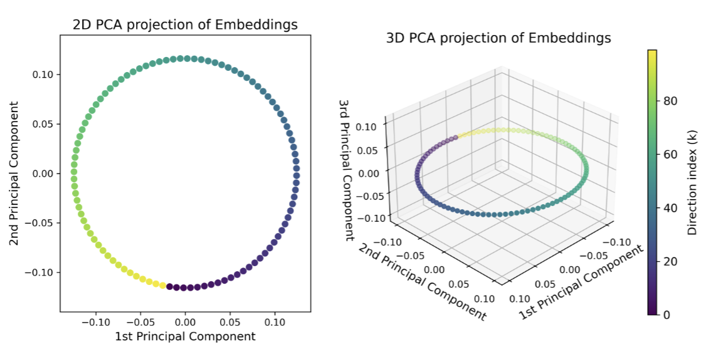
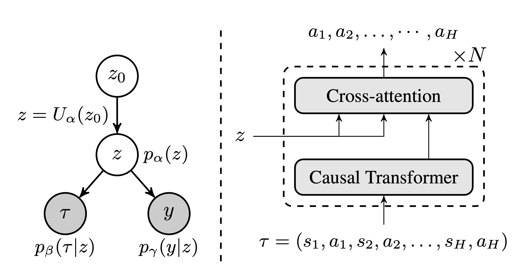
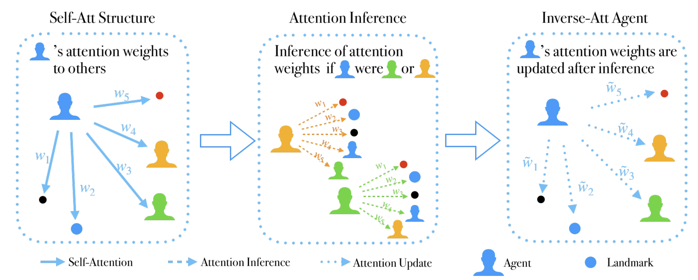
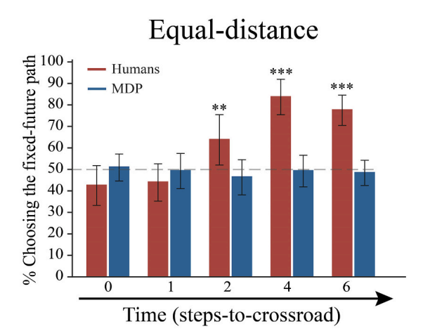
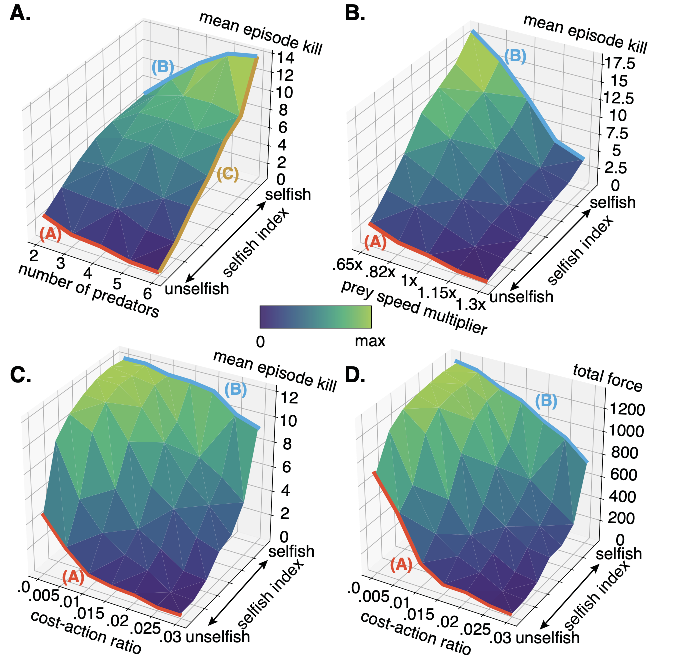
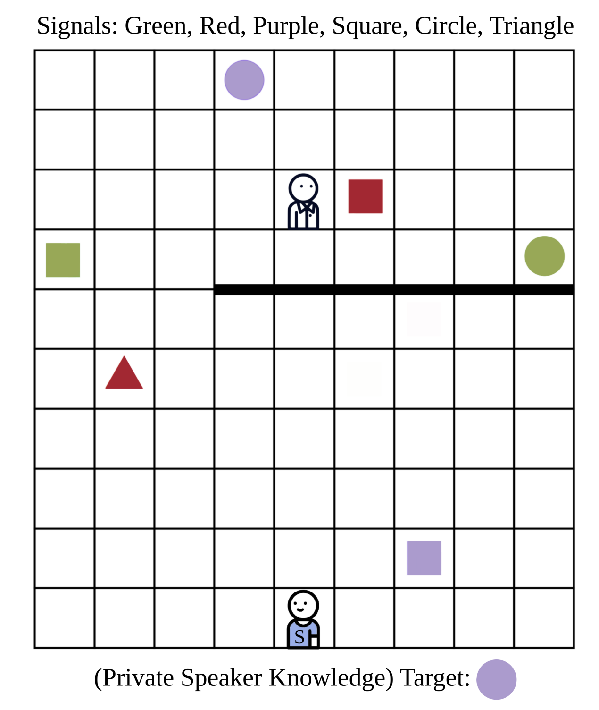
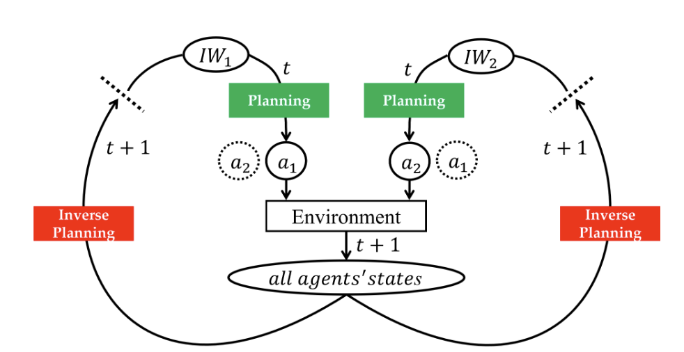

Minglu Zhao
Ph.D. Candidate
Department of Statistics
University of California, Los Angeles
Advisor: Ying Nian Wu and Tao Gao
Email: minglu.zhao@ucla.edu
Google Scholar GitHub
University of California, Los Angeles
Advisor: Ying Nian Wu and Tao Gao
Email: minglu.zhao@ucla.edu
Google Scholar GitHub
Bio
I am a fourth-year Ph.D. student in the Department of Statistics at UCLA, advised by Ying Nian Wu and Tao Gao. My research explores the intersections of decision-making, representation learning, and cognitive science, with a focus on developing generative models and latent variable approaches to improve decision-making processes in complex environments.
I obtained my B.S. in Statistics and B.S. in Cognitive Science also at UCLA. Go Bruins! 🐻
News
- Oct 2024: Our paper on representation modeling for head direction system is accepted by the workshop on Symmetry and Geometry in Neural Representations (NeurReps) at NeurIPS 2024
- Oct 2024: Our paper on Theory-of-mind-based cooperation modeling is accepted by the workshop on Open-World Agents at NeurIPS 2024
- Sep 2024: Our paper Latent Plan Transformer, is accepted by NeurIPS 2024
- June 2023: I will be joining GE Global Research as a research scientist intern this summer
Selected Publications
* denotes equal contribution.

Minglu Zhao,
Dehong Xu,
Wenhao Zhang,
Ying Nian Wu
A minimalistic representation model for head direction system
A minimalistic representation model for head direction system
In
NeurIPS Workshop on Symmetry and Geometry in Neural Representations,
2024.
We present a model for the head direction (HD) system that captures essential HD cell properties through a high-dimensional U(1) representation. This model reveals Gaussian-like tuning and 2D circular geometry, accurately supporting path integration in both fully connected and convolutional forms.
Cite A minimalistic representation model for head direction system
Minglu Zhao, Dehong Xu, Wenhao Zhang, Ying Nian Wu.
"A minimalistic representation model for head direction system." NeurIPS 2024 Workshop on Symmetry and Geometry in Neural Representations.

Deqian Kong*,
Dehong Xu*,
Minglu Zhao*,
Bo Pang,
Jianwen Xie,
Andrew Lizarraga,
Yuhao Huang,
Sirui Xie*,
Ying Nian Wu
Latent Plan Transformer: Planning as Latent Variable Inference
Latent Plan Transformer: Planning as Latent Variable Inference
In
NeurIPS,
2024.
We introduce the Latent Plan Transformer (LPT), a novel model that leverages a latent space to connect a Transformer-based trajectory generator and the final return. This architecture enables planning without step-wise rewards, addressing temporal consistency challenges in long-term tasks. LPT uses maximum likelihood estimation on trajectory-return pairs, with posterior sampling of latent variables for consistent sub-trajectory abstraction. During inference, LPT deduces the latent variable based on expected returns, realizing a planning-as-inference approach.
Cite Latent Plan Transformer: Planning as Latent Variable Inference
@article{kong2024latent,
title={Latent Plan Transformer for Trajectory Abstraction: Planning as Latent Space Inference},
author={Kong, Deqian and Xu, Dehong and Zhao, Minglu and Pang, Bo and Xie, Jianwen and Lizarraga, Andrew and Huang, Yuhao and Xie, Sirui and Wu, Ying Nian},
journal={Advances in Neural Information Processing Systems},
year={2024}
}

Long Qian*,
Li Ruoyan*,
Minglu Zhao*,
Tao Gao,
Demetri Terzopoulos
Inverse Attention Agent in Multi-Agent System
Inverse Attention Agent in Multi-Agent System
In
NeurIPS 2024 Workshop on Open-World Agents,
2024.
We introduce Inverse Attention Agents, leveraging Theory of Mind concepts through an attention mechanism to enable adaptability in dynamic multi-agent environments. These agents infer the goals and attentional states of other agents, refining their attention weights for improved decision-making. Tested across cooperative, competitive, and mixed tasks, our approach enhances performance and human-like cooperation compared to conventional models.
Cite Inverse Attention Agent in Multi-Agent System
Long Qian*, Li Ruoyan*, Minglu Zhao*, Tao Gao, Demetri Terzopoulos.
"Inverse Attention Agent in Multi-Agent System." NeurIPS 2024 Workshop on Open-World Agents.

Shaozhe Cheng,
Minglu Zhao,
Ning Tang,
Yang Zhao,
Jifan Zhou,
Mowei Shen,
Tao Gao
Intention beyond desire: Spontaneous intentional commitment regulates conflicting desires
Intention beyond desire: Spontaneous intentional commitment regulates conflicting desires
In
Cognition,
2023.
We explore how coherent actions emerge from conflicting desires, contrasting classical desire-driven behavior with intention-driven action. Through 2D navigation games, we identify three unique markers of human intentional commitment—goal perseverance, self-binding, and temporal leap—that distinguish human actions from purely desire-driven agents. Our findings suggest that humans form committed intentions to manage conflicting desires, enhancing predictability and reducing computational load in action planning.
Cite Intention beyond desire: Spontaneous intentional commitment regulates conflicting desires
@article{cheng2023intention,
title={Intention beyond desire: Spontaneous intentional commitment regulates conflicting desires},
author={Cheng, Shaozhe and Zhao, Minglu and Tang, Ning and Zhao, Yang and Zhou, Jifan and Shen, Mowei and Gao, Tao},
journal={Cognition},
volume={238},
pages={105513},
year={2023},
publisher={Elsevier}
}

Minglu Zhao,
Ning Tang,
Annya L Dahmani,
Yixin Zhu,
Federico Rossano,
Tao Gao
Sharing rewards undermines coordinated hunting
Sharing rewards undermines coordinated hunting
In
Journal of Computational Biology,
2022.
We investigate the impact of reward sharing on coordinated hunting using Multi-agent Reinforcement Learning (MARL) and reveal surprising findings: rather than facilitating coordination, sharing rewards undermines it due to issues like the free-rider problem and coordination limits at larger group sizes. Individually rewarded agents outperform those sharing rewards, particularly in challenging scenarios. Our results suggest that reward sharing may not be crucial for animal coordination, challenging assumptions in AI models that rely on shared rewards to motivate group coordination.
Cite Sharing rewards undermines coordinated hunting
@article{zhao2022sharing,
title={Sharing rewards undermines coordinated hunting},
author={Zhao, Minglu and Tang, Ning and Dahmani, Annya L and Zhu, Yixin and Rossano, Federico and Gao, Tao},
journal={Journal of Computational Biology},
volume={29},
number={9},
pages={1022--1030},
year={2022},
publisher={Mary Ann Liebert, Inc.}
}

Stephanie Stacy,
Chenfei Li,
Minglu Zhao,
Yiling Yun,
Qingyi Zhao,
Max Kleiman-Weiner,
Tao Gao
Modeling communication to coordinate perspectives in cooperation
Modeling communication to coordinate perspectives in cooperation
In
CogSci,
2021.
We introduce the Imagined We for Communication framework, a model where agents leverage shared agency to interpret overloaded signals in ambiguous contexts. By simulating rational cooperators, our model demonstrates strong performance in high-ambiguity settings, even with minimal reasoning depth, underscoring how shared knowledge and cooperative logic support effective communication.
Cite Modeling communication to coordinate perspectives in cooperation
@inproceedings{stacy2021modeling,
title={Modeling communication to coordinate perspectives in cooperation},
author={Stacy, Stephanie and Li, Chenfei and Zhao, Minglu and Yun, Yiling and Zhao, Qingyi and Kleiman-Weiner, Max and Gao, Tao},
booktitle={Proceedings of the annual meeting of the cognitive science society},
year={2021}
}

Ning Tang,
Stephanie Stacy,
Minglu Zhao,
Gabriel Marquez,
Tao Gao
Bootstrapping an Imagined We for Cooperation
Bootstrapping an Imagined We for Cooperation
In
CogSci,
2020.
We develop a Bayesian-Theory-of-mind-based framework named the Imagined We (IW), showing how agents can reliably converge on a joint intention in uncertain, multi-choice settings through bootstrapping. In a real-time cooperative hunting task, our model proves resilient to challenges like numerous choices, approximate partner models, and noisy perceptions, highlighting its robustness in maintaining joint commitment under imperfect conditions.
Cite Bootstrapping an Imagined We for Cooperation
@inproceedings{tang2020bootstrapping,
title={Bootstrapping an Imagined We for Cooperation},
author={Tang, Ning and Stacy, Stephanie and Zhao, Minglu and Marquez, Gabriel and Gao, Tao},
booktitle={Proceedings of the annual meeting of the cognitive science society},
year={2020}
}
Teaching
- STATS 10 Introduction to Statistical Reasoning.
- STATS 20 Introduction to Statistical Programming with R
- STATS 21 Python and Other Technologies for Data Science
- STATS 100A Introduction to Probability
- STATS 102C Introduction to Monte Carlo Methods